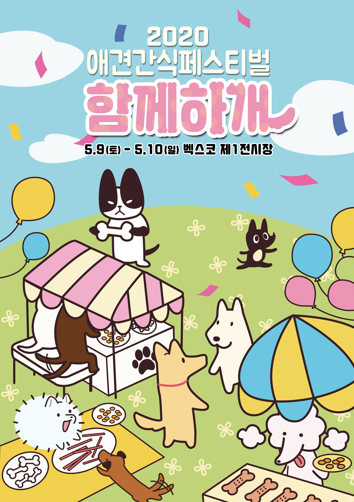
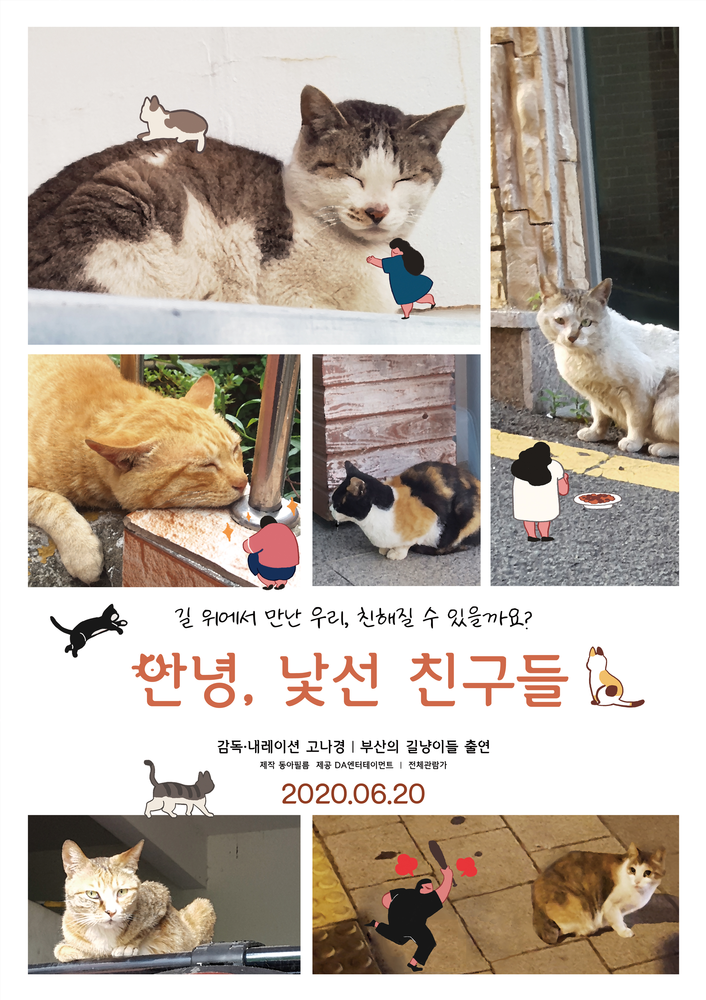
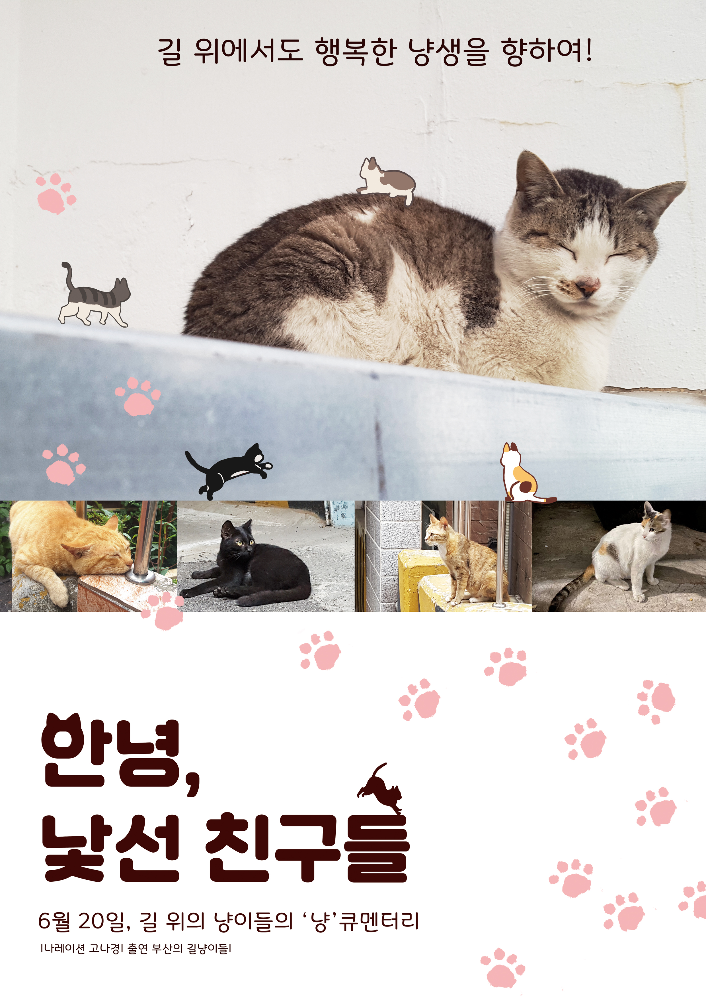
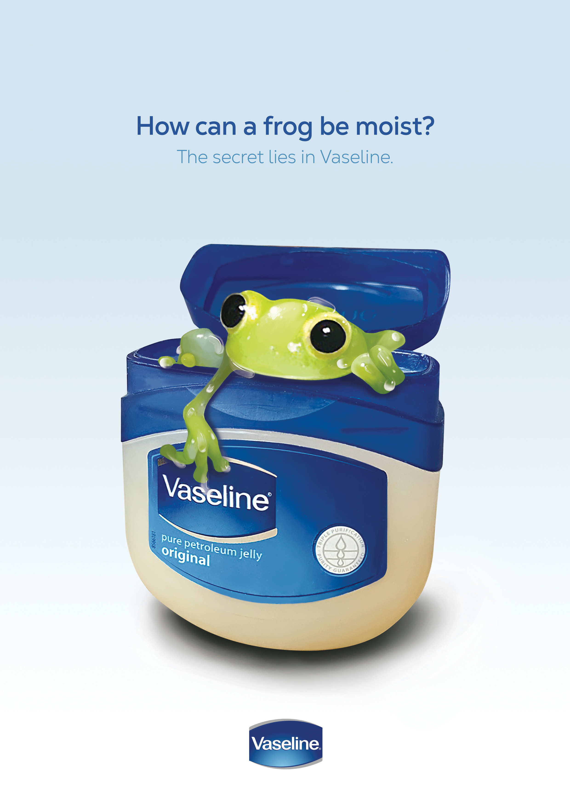
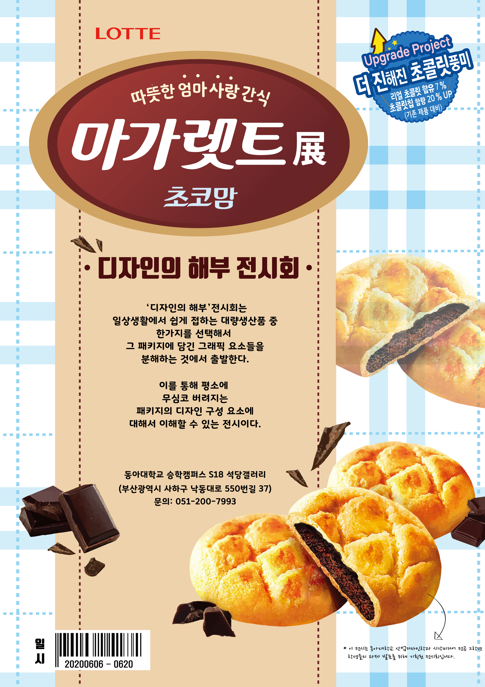
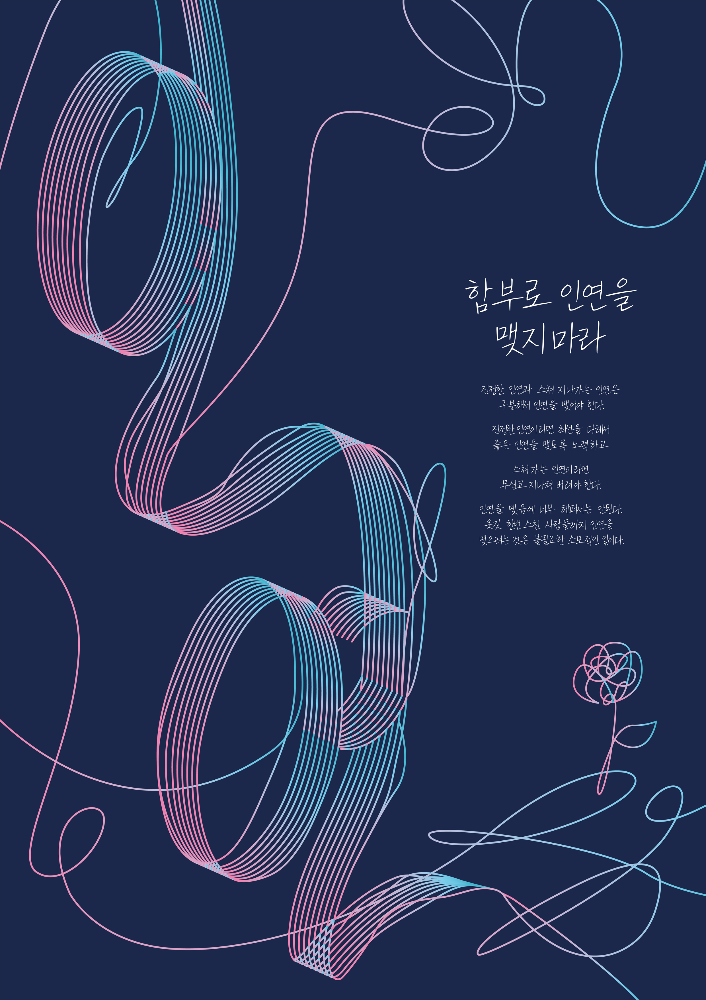

Poster Design
다양한 컨셉과 주제의 포스터들을 제작하였습니다.
애견 간식 페스티벌 축제
'애견 간식 페스티벌 축제'라는 가상의 축제를 기획하여 제작한 포스터입니다.
귀여운 강아지 캐릭터 일러스트로 구성하여 친근감과 함께 축제의 밝은 분위기를 담았습니다.

시안 1. 길고양이 다큐멘터리 포스터
길고양이에게 따뜻한 시선을 보내자는 의도를 담은 다큐멘터리 포스터입니다.
사진 옆으로 고양이에게 밥을 주는 사람, 화를 내는 사람 등 다양한 사람 캐릭터를 그려 길고양이 주변에 있는 사람들을 나타냈습니다. 제목에 고양이 귀와 수염을 그려 포인트를 주었습니다.

시안 2. 길고양이 다큐멘터리 포스터
위의 포스터와 같은 주제의 포스터로 고양이 발자국으로 귀여움을 더하였습니다.

바세린 광고 포스터
개구리가 바세린통에 들어갔다 나오는 연출을 통해 개구리의 피부가 촉촉할 수 있었던 이유는 바세린을 바른 덕분이라는 내뇽을 담았습니다.

디자인 해부 전시회 포스터
과자 패키지를 그래픽을 분석하여 제작한 '디자인 해부 전시회'의 포스터입니다.

인연 이야기 타이포 포스터
법정 스님의 '인연 이야기' 제목을 주제로 제작한 타이포 포스터입니다.
복잡하게 얽히고설킨 인연의 실을 표현하기 위해 선 요소를 이용하여 타이포 포스터를 제작하였습니다. 복잡하지만 아름다운 인연을 꽃 한송이로 나타냈습니다.